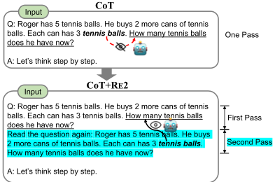
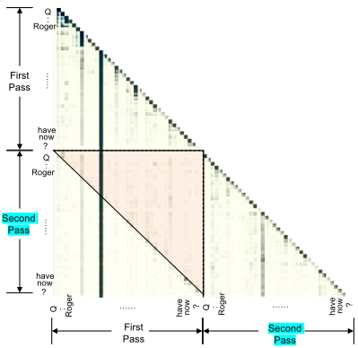
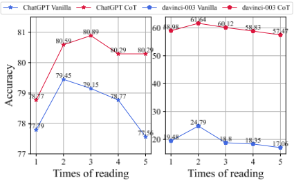
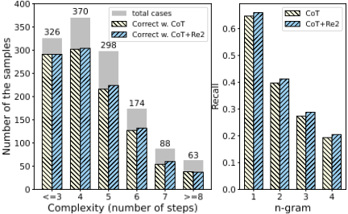
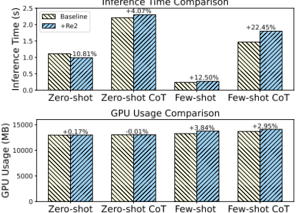
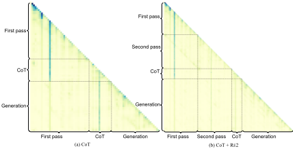
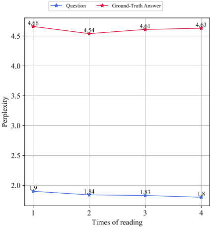
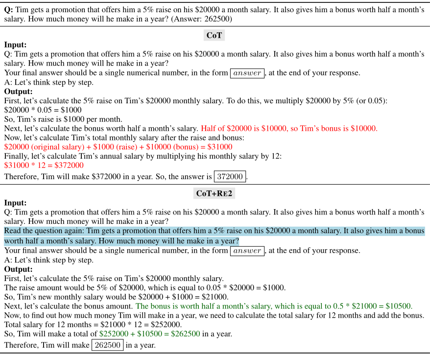
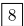

Re-Reading（重读）提升 LLM 的推理能力
该论文针对一个被忽视的问题：主流 decoder-only LLM 采用单向注意力，编码问题时每个 token 看不到后文，而已有方法（CoT、PAL 等）几乎都只优化输出阶段的思维引导，忽略输入理解阶段。作者提出 RE2 提示法：在输入中把问题重复两遍（'Read the question again:'），让第一遍为第二遍提供全局信息，在单向注意力模型中实现'双向'理解。RE2 即插即用，可与 CoT、PAL、Plan-and-Solve、few-shot、self-consistency 正交组合。在 14 个数据集、112 组实验中，RE2 在 davinci-003、ChatGPT、LLaMA-2、GPT-4o-mini 上普遍有效（如 davinci-003 CoT+RE2 在符号推理平均 +5.25），重读 2 次最优，推理时间与显存仅边际增加。对团队而言，这是一个零训练成本、可直接嵌入现有提示模板的推理增强技巧。
现有提升 LLM 推理能力的研究几乎都聚焦输出阶段的思维引导（CoT、PAL、ToT 等），忽视输入理解阶段；同时主流 decoder-only LLM 采用单向注意力，编码问题时每个 token 只能看到前文，无法结合问题后文（如真正提问的 'How many ...' 句）来理解前文，损害了对问题的双向理解，进而限制推理表现。
提出 RE2（Re-Reading）提示法：在提示中将输入问题重复两遍，格式为 'Q: {问题} Read the question again: {问题}'，再接思维引导提示（如 'Let's think step by step'）。第一遍阅读为第二遍提供全局信息，使第二遍的每个 token 能'看到'其后续 token，实现近似双向编码；同时重复问题相当于为输入编码分配更多计算资源。RE2 作为 plug & play 模块，与 CoT、PAL、Plan-and-Solve、few-shot 示例、self-consistency 等正交兼容；作者以 LLaMA-2 的注意力热图与困惑度分析验证其机制，并实测其对推理时间与显存的影响。
在 14 个数据集、112 组实验中，davinci-003 的 Vanilla+RE2 在算术/常识/符号推理上平均提升 3.81/2.51/1.85，CoT+RE2 平均提升 2.22/1.23/5.25
ChatGPT 上 RE2 在 71% 的实验中带来提升；Vanilla+RE2 在 StrategyQA 提升 4.63、Coin 数据集提升 5.20（个别数据集如 AQuA、MultiArith 略降）
重读次数以 2 次（部分场景 3 次）最优，继续增加重读次数性能下降；困惑度分析显示过多重复使模型更倾向复述问题而非生成答案
注意力分析显示 RE2 使生成过程中分配给问题 token 的注意力权重占比从 0.32 提升至 0.40
在 Llama-2 7B 上实测，RE2 仅边际增加推理时间与显存占用；在非 IFT 的 LLaMA-2-13B/70B 与较新的 GPT-4o-mini 上依然有效
区别于 CoT 等在输出阶段引导思维的方法，RE2 把优化焦点转向输入理解阶段，二者正交可叠加；论文将 NLP 中已有的重读机制与检索领域的 query augmentation 思想迁移到 decoder-only LLM 的推理提示中，以极简方式（仅重复问题）在单向注意力模型中实现'双向'编码效果，无需任何训练或架构改动，并系统验证了与多种模型、提示方法和集成策略的兼容性。
相关度级别：high
命中能力域：3.2 提示工程
理由：直接命中 3.2 提示工程能力域的核心技术：RE2 是典型的提示技术与推理提示模式，与团队'把模型用好而非训练模型'的定位完全一致。它零训练成本、即插即用，可叠加到团队现有的 CoT/Agent 提示模板中；论文还给出重读次数、指令措辞（带 'Read the question again:' 的 P1 优于直接重复）、对 IFT 模型的例外场景、推理效率影响等工程化细节，可直接指导提示词资产的设计与复用，也提示团队在评测提示改动时应覆盖多数据集/多模型以发现例外情况。
建议动作：深入精读并做内部分享
arXiv:2309.06275v4 [cs.CL] 2024年11月19日
重读提升大语言模型的推理能力
Xiaohan Xu 1 , Chongyang Tao 2 * , Tao Shen 3 , Can Xu 4 ,
1 3 4 2
Hongbo Xu , Guodong Long , Jian-guang Lou , Shuai Ma
1 中国科学院信息工程研究所 2 北京航空航天大学软件开发环境国家重点实验室（SKLSDE Lab） 3 悉尼科技大学 4 微软公司
shawnxxh@gmail.com, {chongyang, mashuai}@buaa.edu.cn, hbxu@iie.ac.cn
{caxu,jlou}@microsoft.com, {tao.shen,guodong.long}@uts.edu.cn
为了增强现成（off-the-shelf）大语言模型（LLMs）的推理能力，我们提出了一种简单却通用而有效的提示方法 RE2，即对作为输入的问题进行重读（Re-Reading）。与大多数思维激发类（thought-eliciting）提示方法（如思维链，Chain-of-Thought, CoT）旨在从输出中激发推理过程不同，RE2 将焦点转移到输入端，通过两次处理问题来增强理解过程。因此，RE2 表现出很强的通用性，并能与包括 CoT 在内的大多数思维激发类提示方法兼容。至关重要的是，RE2 在单向的仅解码器（decoder-only）LLM 中促成了“双向”编码，因为第一遍处理可以为第二遍提供全局信息。我们首先进行了一项初步实证研究作为 RE2 的基础，展示了其实现“双向”注意力机制的潜力。随后，我们在 14 个数据集上的大量推理基准测试（benchmark）中对 RE2 进行了评估，共涵盖 112 项实验，以验证其有效性和通用性。我们的研究结果表明，除了原始版 ChatGPT 上的少数场景外，RE2 均能通过简单的重读策略持续提升 LLM 的推理性能。进一步的分析揭示了 RE2 的适应性，展示了它如何与不同的 LLM、思维激发类提示方法以及集成（ensemble）策略有效结合。1
在不断发展的人工智能领域，大语言模型（large language models, LLMs）已成为自然语言理解与生成的基石 (Brown et al., 2020; Touvron et al., 2023a,a; OpenAI, 2023; Xu et al., 2024)。随着 LLM 日益先进，一个关键挑战随之浮现：教会它们有效地进行推理。良好的推理能力是人类智能的一个关键方面，它使我们能够推断、演绎和解决问题。对于 LLM 而言，这项技能对提升其实际应用至关重要。尽管 LLM 能力令人瞩目，但它们在推理任务上常常遇到困难 (Blair-Stanek et al., 2023; Arkoudas, 2023)，这促使研究者探索更多策略来增强推理能力 (Wei et al., 2022b; Gao et al., 2023; Besta et al., 2023)。
* 通讯作者
1 我们的代码已在 Github 上公开。

现有的推理研究主要集中于设计多样化的思维激发类提示策略，以在输出阶段引出推理过程，例如思维链（Chain-of-Thought, CoT）(Wei et al., 2022b)、程序辅助语言模型（Program-Aided Language Model, PAL）(Gao et al., 2023) 等 (Yao et al., 2023a; Besta et al., 2023; Wang et al., 2023a)。相比之下，对输入阶段理解的关注却很少。事实上，理解是解决问题之前的第一步，这一点至关重要。然而，在生成式 AI 时代，大多数 LLM 采用具有单向注意力机制的仅解码器（decoder-only）架构，例如 GPT-3 (Brown et al., 2020) 和 LLaMA (Touvron et al., 2023b)。这种单向注意力使得在编码问题时，每个 token 只能看到之前的 token，这可能损害对问题中每个词的双向理解 (Du et al., 2022)。在图 1 中，最后一句 "How many ..." 突出了问题的核心关注点，这对理解前面的词语至关重要。然而，由于其单向视野，LLM 在编码某个 token 时无法看到后续的词语。

幸运的是，许多认知科学研究表明，人类在学习和解决问题时倾向于重读问题，以增强理解过程 (Dowhower, 1987, 1989; Ozek and Civelek, 2006)。第一次阅读提供了整体理解，这有助于第二次阅读。受此启发，我们还针对 LLaMA-2 (Touvron et al., 2023b) 进行了一项初步实证研究，使用 GSM8K 数据集 (Cobbe et al., 2021)，将问题重复两次作为输入。图 2 中的注意力热力图显示，重读策略使 LLaMA-2 能够对问题实现“双向”理解，这有望进一步提升推理性能。
基于上述观察，并受人类重读策略的启发，我们提出了一种简单而有效且通用的推理提示策略 RE2，即将问题重读（Re-Reading）后作为输入（见图 1 中的图示）。尽管我们的 RE2 很简单，但它为大语言模型（LLM）的推理场景提供了若干优势。（1）该方法模拟了人类解决问题的策略，采用 RE2 的 LLM 展现出对问题进行“双向”理解的潜力。（2）重复问题使 LLM 能够将更多计算资源分配给输入编码，类似于“水平地”增加神经网络的深度。（3）RE2 强调输入阶段的理解，这使其与大多数关注输出阶段的思维激发类提示方法（如思维链（CoT）和 PAL）正交且兼容。
为了验证 RE2 的有效性和通用性，我们在 14 个数据集上开展了涵盖算术、常识和符号推理任务的大量实验，共计 112 项实验。结果表明，除原始版 ChatGPT 上的某些场景外，采用简单重读策略的 RE2 能够持续提升 LLM 的推理性能。RE2 在多种 LLM 上均表现出通用性，例如 Text-Davinci-003、ChatGPT、LLaMA-2-13B 和 LLaMA-2-70B，涵盖指令微调（IFT）与非 IFT 模型。我们还在零样本（zero-shot）与少样本（few-shot）任务设置、思维激发类提示方法以及自洽性（self-consistency）设置下对 RE2 进行了探索，凸显了其通用性。
我们首先给出一个统一的公式化表述，以利用带思维链（Chain-of-Thought, CoT）提示的 LLM 来解决推理任务。形式化地，给定输入 x 和目标 y，采用 CoT 提示的 LLM p 可以表示为
在该公式化表述中，C x 表示提示后的输入。c ( cot ) ( · ) 表示带有 CoT 提示指令的模板，例如“让我们一步一步思考”（let's think step by step）。z 代表推理依据（rationale）这一隐变量，而 z 表示以自然语言形式采样得到的推理依据。这样一来，LLM 便能够将复杂任务分解为更易于处理的推理步骤，并将每个步骤视为整体求解链条中的一个组成部分。我们采用 CoT 作为解决推理任务的基线，且不损害其通用性。除 CoT 之外，我们提出的简单方法 RE2 还可以作为一个“即插即用”（plug & play）模块，适配大多数其他提示方法（§2.3）。
受人类重读（re-reading）策略的启发，我们将这一策略引入大语言模型（LLM）的推理过程中，称之为 RE2，以增强输入阶段的理解。借助 RE2，式 1 中的提示过程可以方便地重新表述为：
在该表述中，re2( · ) 表示对输入的重读操作。我们并不寻求对 LLM 进行复杂的调整，而是力求使 re2( x ) 的通用实现简单如下：
Q: {Input Query} Read the question again: {Input Query} # Thought-eliciting prompt (e.g.,'Let's think step by step") #
其中，"{Input Query}" 是输入查询 x 的占位符。该提示的左侧部分还可以融入其他引导思考的提示（thought-eliciting prompt）。直观上，RE2 在增强理解过程方面具有两大优势：（1）它为输入分配了更多的计算资源；（2）它促进了对问题的“双向”理解，即第一遍阅读为第二遍阅读提供全局信息。
由于 RE2 的简洁性以及对输入阶段的强调，它可以与广泛的大语言模型（LLM）和算法无缝集成，包括少样本（few-shot）设置、自一致性（self-consistency）、各种引导思考的提示策略等。作为示例，我们提供了 RE2 与其他引导思考提示策略相集成的见解。
与那些专注于输出阶段的引导思考提示策略相比，RE2 将重点转向对输入的理解。因此，RE2 与它们表现出显著的兼容性，可作为一个“即插即用”（plug & play）模块。这种协同作用有潜力进一步增强 LLM 的推理能力。若采用一个特定的引导思考提示 τ 来从 LLM 中引出思考，则式 (3) 可改写为：
其中，τ 表示思维链（CoT）之外的各种引导思考提示方法，例如 Plan-and-Solve（Wang et al., 2023a）和 Program-Aided Prompt（Gao et al., 2023）等。我们还在 §3.4 中进行了大量实验以验证 RE2 的通用性。
我们在三类关键的推理基准测试（benchmark）上评估 RE2 提示方法。所有数据集的详细信息见附录 A。
算术推理 我们考虑以下七个算术推理基准测试：数学应用题基准测试 GSM8K (Cobbe et al., 2021)、具有不同结构的数学应用题数据集 SVAMP (Patel et al., 2021)、多样化数学应用题数据集 ASDiv (Miao et al., 2020)、代数应用题数据集 AQuA (Ling et al., 2017)、面向三至五年级学生的加减法数学应用题数据集 AddSub (Hosseini et al., 2014)、包含多个步骤的数学题数据集 MultiArith (Roy and Roth, 2015)，以及仅含单一运算的小学数学应用题数据集 SingelEQ (Roy et al., 2015)。
常识推理与符号推理 在常识推理方面，我们使用 CSQA (Talmor et al., 2019)、StrategyQA (Geva et al., 2021) 和 ARC (Clark et al., 2018)。CSQA 数据集由需要各种常识知识的问题组成。StrategyQA 数据集包含需要多步推理的问题。ARC 数据集（记作 ARC-t）分为两个集合：挑战集（Challenge Set，记作 ARCc），其中包含基于检索的算法和词共现算法均回答错误的问题；以及简单集（Easy Set，记作 ARC-e）。我们评估两个符号推理任务：日期理解（date understanding）(Suzgun et al., 2023a) 和 Coinflip (Wei et al., 2022b)。日期理解是 BigBench 数据集 (Suzgun et al., 2023a) 的一个子集，这些数据集曾给以往的微调工作带来挑战。Coinflip 是一个数据集，其中的问题要求根据题目中给出的步骤，判断硬币在被抛掷或不被抛掷之后是否仍然正面朝上。
| LLMs | Methods | GSM | SVAMP | ASDIV | AQUA | MultiArith | SingleEQ | AddSub |
|---|---|---|---|---|---|---|---|---|
| davinci-003 | Vanilla | 19.48 | 67.60 | 69.00 | 28.74 | 31.33 | 86.22 | 89.87 |
| davinci-003 | Vanilla+RE2 | 24.79 ↑ 5.31 | 70.90 ↑ 3.30 | 71.20 ↑ 2.20 | 30.31 ↑ 1.57 | 42.33 ↑ 11.00 | 87.20 ↑ 0.98 | 92.15 ↑ 2.28 |
| davinci-003 | CoT | 58.98 | 78.30 | 77.60 | 40.55 | 89.33 | 92.32 | 91.39 |
| davinci-003 | CoT+RE2 | 61.64 ↑ 2.68 | 81.00 ↑ 2.70 | 78.60 ↑ 1.00 | 44.49 ↑ 3.94 | 93.33 ↑ 4.00 | 93.31 ↑ 0.99 | 91.65 ↑ 0.26 |
| ChatGPT | Vanilla | 77.79 | 81.50 ∗ | 87.00 ∗ | 63.78 ∗ | 97.83 ∗ | 95.28 ∗ | 92.41 ∗ |
| ChatGPT | Vanilla+RE2 | 79.45 ↑ 1.66 | 84.20 ↑ 2.70 | 88.40 ↑ 1.40 | 59.45 ↓ 4.33 | 96.67 ↓ 1.16 | 94.49 ↓ 0.79 | 91.65 ↓ 0.76 |
| ChatGPT | CoT | 78.77 | 78.70 | 85.60 | 55.51 | 95.50 | 93.70 | 88.61 |
| ChatGPT | CoT+RE2 | 80.59 ↑ 1.82 | 80.00 ↑ 1.30 | 86.00 ↑ 0.40 | 59.45 ↑ 3.94 | 96.50 ↑ 1.00 | 95.28 ↑ 1.58 | 89.87 ↑ 1.26 |
| LLMs | Methods | GSM | SVAMP | ASDIV | AQUA | MultiArith | SingleEQ | AddSub |
| LLMs. | Methods. | Commonsense.CSQA | Commonsense.StrategyQA | Commonsense.ARC-e | Commonsense.ARC-c | Commonsense.ARC-t | Symbolic.Date | Symbolic.Coin |
|---|---|---|---|---|---|---|---|---|
| davinci-003 | Vanilla | 74.20 ∗ | 59.74 | 84.81 | 72.01 | 80.58 | 40.92 | 49.80 |
| davinci-003 | Vanilla+RE2 | 76.99 ↑ 2.79 | 59.91 ↑ 0.17 | 88.22 ↑ 3.41 | 75.68 ↑ 3.67 | 84.07 ↑ 3.49 | 42.01 ↑ 1.09 | 52.40 ↑ 2.60 |
| davinci-003 | CoT | 71.66 | 67.55 | 85.69 | 73.21 | 81.57 | 46.07 | 95.60 |
| davinci-003 | CoT+RE2 | 73.05 ↑ 1.39 | 66.24 ↓ 1.31 | 87.84 ↑ 2.15 | 76.02 ↑ 2.81 | 83.94 ↑ 2.37 | 52.57 ↑ 6.50 | 99.60 ↑ 4.00 |
| ChatGPT | Vanilla | 76.66 ∗ | 62.36 | 94.32 ∗ | 85.41 ∗ | 91.37 ∗ | 47.43 ∗ | 52.00 |
| ChatGPT | Vanilla+RE2 | 78.38 ↑ 1.72 | 66.99 ↑ 4.63 | 93.81 ↓ 0.51 | 83.19 ↓ 2.22 | 90.30 ↓ 1.07 | 47.97 ↑ 0.54 | 57.20 ↑ 5.20 |
| ChatGPT | CoT | 69.94 | 67.82 | 93.35 | 83.53 | 90.11 | 43.63 | 88.80 |
| ChatGPT | CoT+RE2 | 71.66 ↑ 1.72 | 69.34 ↑ 1.52 | 93.14 ↓ 0.21 | 84.47 ↑ 0.94 | 90.27 ↑ 0.16 | 47.15 ↑ 3.52 | 95.20 ↑ 6.40 |
| LLMs. | Methods. | Commonsense.CSQA | Commonsense.StrategyQA | Commonsense.ARC-e | Commonsense.ARC-c | Commonsense.ARC-t | Symbolic.Date | Symbolic.Coin |
基线提示（Baseline Prompting）。在我们的实现中，我们严格评估了我们的 RE2 模型在两种基线提示方法上的性能：Vanilla 和思维链（CoT）。Vanilla 方法与 (Wei et al., 2022b; Kojima et al., 2022) 中所述的标准提示方法一致，即不使用任何特定提示来从大语言模型（LLM）中引出思考。相反，CoT 方法通过逐步的思考过程来引导模型。
RE2 提示（RE2 Prompting）。我们将 RE2 融入这些基线方法以评估其影响，分别记为 Vanilla+RE2 和 CoT+RE2。为避免少样本（few-shot）设置中示例（demonstrations）所引入随机性的影响，我们遵循 (Chen et al., 2023; Wang et al., 2023a; Du et al., 2023) 的做法，主要在零样本（zero-shot）设置下评估我们的方法。此外，针对不同任务，我们在提示中设计了答案格式指令（answer-format instructions），以规范最终答案的格式，从而便于精确地提取答案。有关基线提示、RE2 提示以及答案格式指令的详细信息可参见附录 B。
实现（Implementations）。我们的解码策略采用贪心解码（greedy decoding），温度设置为
0，从而产生确定性的输出。在这些实验中，我们采用两个强大的骨干模型：ChatGPT (gpt-3.5-turbo-0613) (OpenAI, 2022) 和 davinci-003 (text-davinci-003) 2，并在包括 Vanilla、CoT、Vanilla+RE2 和 CoT+RE2 在内的所有提示方法上进行实验。我们还在附录 C 中针对更先进的 GPT-4o-mini 测试了 RE2。
表 1 展示了在算术推理数据集上的结果，表 2 展示了在常识推理和符号推理上的结果。在几乎所有场景中，采用 RE2 的大语言模型（LLM）在两种 LLM（davinci-003 和 ChatGPT）以及两种提示方法（Vanilla 和 CoT）上都取得了一致的提升。具体而言，使用 Vanilla+RE2 的 davinci-003 在算术、常识和符号任务上分别平均提升 3.81、2.51 和 1.85。在使用思维链（CoT）时，davinci-003 会生成中间推理步骤，显著增强了 LLM 的推理性能。通过应用 RE2，使用 CoT+RE2 的 davinci-003 展现出进一步的提升，在相同类别上分别平均提升 2.22、1.23 和 5.25。这些结果表明，RE2 既能让 LLM 在直接生成答案时受益，也能提升 CoT 的性能，从而引导模型得出正确答案。
2 https://platform.openai.com/docs/models/gpt-3-5

当应用于 ChatGPT 时，RE2 在大多数数据集上表现出一致的改进，但在使用 Vanilla+RE2 时，在少数数据集（例如 AQUA 和 MultiArith）上性能略有下降。这一例外可能是由于 ChatGPT 在指令微调（IFT）期间接触过这些带有 CoT 输出的数据集（Chen et al., 2023）。在这类数据集上，使用 Vanilla 的 ChatGPT 仍会生成类似 CoT 的输出（示例见附录 G），甚至优于使用 CoT 的 ChatGPT（如表 1 和表 2 中带 ∗ 的结果所示）。Chen et al. (2023) 获得了类似的实验结果，并指出出现这一现象的原因在于 ChatGPT 可能在没有显式提示的情况下就已接触过这些包含 CoT 解释的任务数据集。因此，额外的显式指令（如 CoT 或 RE2）可能会破坏 ChatGPT 中这种已习得的模式，进而可能导致性能下降。尽管如此，在一些数据集（如 SVAMP、ASDIV、CSQA 和 Date）上，RE2 仍能改进作为基线的 Vanilla 提示。此外，在 CoT 提示通常优于 Vanilla 提示的数据集（如 GSM、StrategyQA 和 Coin）上，RE2 显著增强了 Vanilla 提示的效果（在 StrategyQA 上 ↑ 4.63，在 Coin 数据集上 ↑ 5.20）。总体而言，我们的 RE2 方法在 ChatGPT 上的实验中仍有 71% 取得了改进。更多来自实验结果的示例可参见附录 G。
问题阅读次数 我们深入研究了问题重读次数对推理性能的影响。图 3 展示了两个不同的 LLM 在不同问题重读次数下的性能演变情况。所有模型都呈现出一个总体规律：性能会持续提升，直到重读次数达到 2 或 3 次，此后随着问题重读次数的进一步增加，性能开始下降。多次阅读问题时性能较差的潜在原因有两个方面：i) 适当的阅读次数能够提升 LLM 生成正确答案的能力。然而，过度重复问题可能会起到示例的作用，导致 LLM 重复问题本身（详细分析见附录 E）；以及 ii) 重复问题会显著增加 LLM 在我们的推理与预训练/对齐之间的不一致性（直观来看，在学习语料库中，我们通常只将问题重复两次）。值得注意的是，在大多数场景下，将问题阅读两次是最优的，这也是我们在论文中将其称为“重读”（re-reading）的原因。
| LLMs | Methods | GSM |
|---|---|---|
| ChatGPT | PS | 75.59 |
| ChatGPT | PS+RE2 | 76.27 |
| ChatGPT | PAL | 75.59 |
| ChatGPT | PAL + RE2 | 79.38 |
| davinci-003 | PS | 55.65 |
| davinci-003 | PS+RE2 | 58.68 |
| davinci-003 | PAL | 68.61 |
| davinci-003 | PAL + RE2 | 70.2 |
| LLMs | Methods | GSM |
Strategies Compared to previous methods attempting to elicit thoughts in the output from LLMs, our RE2 emphasizes the understanding of the input. Therefore, we are intrigued to explore whether RE2 is effective with various thoughteliciting prompting strategies other than CoT. To investigate this, we apply RE2 to two other recently introduced prompting methods, namely, Plan-andSolve (PS) (Wang et al., 2023a) and ProgramAided Language models (PAL) (Gao et al., 2023). The former model devises a plan to divide the entire task into smaller subtasks, and then carries out the subtasks according to the plan, while the latter generates programs as the intermediate reasoning steps. We directly apply our RE2 to these two methods by making a simple alteration to the input by repeating the question. Table 3 presents the evaluation findings on the GSM benchmark. Our observations reveal a consistent trend, akin to what was observed with CoT prompting. These results suggest that the effectiveness of our RE2 generally extends across various prompting methodologies.
| LLMs | Methods | GSM | SVAMP | ASDIV | AQUA | MultiArith | SingleEQ | AddSub |
|---|---|---|---|---|---|---|---|---|
| davinci-003 | Vanilla | 16.98 | 69.10 | 70.56 | 28.34 | 38.67 | 83.46 | 88.86 |
| davinci-003 | Vanilla+RE2 | 19.02 ↑ 2.04 | 73.60 ↑ 4.50 | 73.23 ↑ 2.67 | 27.95 ↓ 0.39 | 46.00 ↑ 7.33 | 84.06 ↑ 0.60 | 89.37 ↑ 0.51 |
| davinci-003 | CoT | 56.63 | 78.90 | 79.96 | 46.45 | 96.16 | 90.94 | 88.60 |
| davinci-003 | CoT+RE2 | 60.12 ↑ 3.49 | 79.80 ↑ 0.90 | 81.21 ↑ 1.25 | 44.89 ↓ 1.56 | 96.83 ↑ 0.67 | 91.14 ↑ 0.20 | 89.37 ↑ 0.77 |
| LLMs | Methods | GSM | SVAMP | ASDIV | AQUA | MultiArith | SingleEQ | AddSub |
| LLMs | Methods | GSM | SVAMP | ASDIV | AQUA | MultiArith | SingleEQ | AddSub |
|---|---|---|---|---|---|---|---|---|
| Llama-2-13B | Vanilla | 5.76 | 43.90 | 52.91 | 22.44 | 6.33 | 68.11 | 66.58 70.12 ↑ 3.54 |
| Llama-2-13B | Vanilla+RE2 | 6.82 ↑ 1.06 | 47.90 ↑ 4.00 | 53.15 ↑ 0.24 | 17.32 ↓ 5.12 | 6.50 ↑ 0.17 | 69.68 ↑ 1.57 | |
| CoT | 21.99 | 41.60 | 45.18 | 22.83 | 56.83 | 58.46 | 58.99 | |
| CoT+RE2 | 22.37 ↑ 0.38 | 46.50 ↑ 4.90 | 48.81 ↑ 3.63 | 24.80 ↑ 1.97 | 55.83 ↓ 0.99 | 66.34 ↑ 7.88 | 60.76 ↑ 1.77 | |
| Llama-2-70B | Vanilla | 11.60 | 56.60 | 61.31 | 20.08 | 24.67 | 77.17 | 80.25 |
| Llama-2-70B | Vanilla+RE2 | 13.50 ↑ 1.90 | 63.60 ↑ 7.00 | 64.66 ↑ 3.35 | 22.05 ↑ 1.97 | 25.00 ↑ 0.33 | 80.31 ↑ 3.14 | 84.05 ↑ 3.80 |
| Llama-2-70B | CoT | 49.73 | 66.90 | 68.08 | 37.80 | 79.83 | 80.51 | 74.18 |
| Llama-2-70B | CoT+RE2 | 56.71 ↑ 6.98 | 70.40 ↑ 3.50 | 70.42 ↑ 2.34 | 38.58 ↑ 0.78 | 88.83 ↑ 9.00 | 81.10 ↑ 0.59 | 69.37 ↓ 4.81 |
| LLMs | Methods | GSM | SVAMP | ASDIV | AQUA | MultiArith | SingleEQ | AddSub |
Compatibility with Few-Shot Prompting It is noteworthy that our proposed re-reading mechanism is compatible with few-shot prompting. To demonstrate this compatibility, we conducted experiments on arithmetic reasoning tasks using the davinci-003 model, employing both Vanilla and CoT prompting methods. The few-shot prompting strategy and exemplars used align with those presented in (Wei et al., 2022b). For both the Vanilla+RE2 and CoT+RE2 methods, we applied the re-reading mechanism to the exemplars as well. The results of these experiments are presented in Table 4. We can observe that the inclusion of the re-reading mechanism consistently enhances the performance of both prompting methods, mirroring our findings in the zero-shot setting.
对非IFT模型的影响 在我们的主要实验中，我们采用了经过指令微调（IFT）训练的ChatGPT和davinci003模型。这些模型与类似人类的行为方式对齐，因此能够更有效地遵循指令。此外，它们在训练期间可能接触过包含思维链（CoT）提示的数据集，这使得“重读”机制在回忆解释方面可能更为有益。为了衡量我们方法更广泛的适用性并消除任何与IFT相关的影响，我们在非IFT预训练模型上进行了实验：Llama-2-13B和Llama-2-70B（Touvron et al., 2023b）。Llama-2是一个在公开可用数据上预训练的开源模型，未经过IFT或基于人类反馈的强化学习（RLHF）微调。我们遵循（Kojima et al., 2022）的做法，在零样本设置下评估了Llama-2在算术推理任务上的表现。结果如表5所示。结果清楚地表明，当应用于Llama-2模型时，重读机制在大多数任务上都能持续提升Vanilla和CoT两种提示方法的性能。这一观察结果凸显了我们方法的通用性，并消除了对训练期间IFT可能造成数据泄露的担忧。这也凸显了RE2的多功能性：无论模型是经过IFT训练的，还是属于非IFT的大语言模型（LLM），RE2都能在各种模型规模和类型上得到有效应用。
| LLMs | Methods | GSM | SVAMP |
|---|---|---|---|
| ChatGPT | Vanilla | 77.79 | 81.50 |
| ChatGPT | Vanilla+SC | 85.60 | 87.37 |
| ChatGPT | Vanilla+RE2 +SC | 86.35 † | 87.74 |
| ChatGPT | CoT | 78.77 | 78.70 |
| ChatGPT | CoT+SC | 85.75 | 84.90 |
| ChatGPT | CoT+RE2 +SC | 86.88 † | 87.70 † |
| LLMs | Methods | GSM | SVAMP |
与自洽性（self-consistency）的兼容性 现有研究表明，思维链提示方法可以通过采用自洽性方法得到增强，该方法涉及从多个采样生成结果中聚合多数最终答案。我们也对利用该方法进一步增强所提出的重读机制的潜力很感兴趣。因此，我们使用ChatGPT在GSM基准测试上进行了实验，测试RE2与自洽性方法的结合。温度设置为0.7。我们报告10次运行的平均结果，其中每次运行都从LLM独立采样10个输出。表6表明，自洽性显著提升了两种提示方法的性能。尽管自洽性聚合了多个答案，我们的重读机制在大多数场景下仍能带来改进，这表明了它与自洽性方法的兼容性。

不同问题复杂度下的性能表现。我们进一步利用 ChatGPT 在 GSM8K 数据集上研究输入问题复杂度对思维链（CoT）与 CoT+RE2 两种提示方法推理性能的影响，如图 4 左侧部分所示。遵循 Fu et al. (2022) 的做法，我们通过统计真实解释中推理步骤的数量来衡量问题复杂度。我们的发现表明，随着问题复杂度的增加，所有提示方法的性能普遍下降，这说明当前的 LLM 在处理复杂查询方面仍然存在困难。值得注意的是，引入重读在各种复杂度下均能提升性能，包括那些略微复杂的问题。这一观察凸显了 RE2 在提升针对复杂问题的推理能力方面的优势。为了进一步验证理解能力的提升，我们计算了生成内容与输入问题之间的覆盖程度（n-gram 召回率），如图 4 右侧部分所示。结果表明，RE2 提高了输出解释中的 n-gram（n=1,2,3,4）召回率，这凸显了我们的方法如何增强模型在推理过程中对问题的关注。
| Prompt | Prompt | Vanilla | CoT |
|---|---|---|---|
| P0 | Q: {question} #Answer format instruction# A: Let's think step by step. | 77.79 | 78.77 |
| P1 | Q: {question} Read the question again: {question} #Answer format instruction# A: Let's think step by step. | 79.45 | 80.59 |
| P2 | Q: {question} Q: {question} #Answer format instruction# A: Let's think step by step. | 78.09 | 79.38 |
| P3 | Q: {question} A: Let's think step by step. Read the question again: {question} #Answer format instruction# A: Let's think step by step. | 79.08 | 80.36 |
| P4 | Q: {question} A: Let's think step by step. Q: {question} #Answer format instruction# A: Let's think step by step. | 78.09 | 79.38 |
| Prompt | Prompt | Vanilla | CoT |
不同重读指令的影响。我们进一步开展实验，以检验 RE2 在 CoT 提示情境下的影响。具体而言，我们使用 ChatGPT 在 GSM8K 数据集上设计了多种用于问题重读的指令。如表 7 中的 P1 和 P2 所示，包含短语 "Read the question again:" 的指令 P1 相比直接将问题重复两次表现出更优的性能。这些结果表明，向 LLM 提供更详细的重读指令是有益的。随后，我们探索了在 CoT 指令中引入重读的可能性（即重复 "Let's think step by step"），如 P3 和 P4 所示。然而，我们观察到，将思考过程重复两次并未带来任何明显的收益。值得注意的是，总体而言，与不进行问题重读的标准 CoT 提示（P0）相比，问题重读始终能够提升推理性能。
对推理效率和内存占用的影响。Re2 在零样本（zero-shot）和少样本（few-shot）设置中都会使问题的长度加倍，这可能影响推理效率和内存占用。本节对这一影响进行了定量探讨。我们使用采用 float16 精度的 Llama-2 7B，并从 GSM8K 数据集中随机抽取 100 个实例。我们在四种场景下测量平均推理时间和内存占用：零样本（Zero-shot）、零样本 + 思维链（CoT）、少样本（Few-shot）和少样本 + CoT。在应用 Re2 时，示例中的问题 Inference Time Comparison 也会被重复。所有实验均在 8 × NVIDIA GeForce RTX 4090 GPU 上进行，结果如图 5 所示。研究结果表明，即使在输入更长的情况下，RE2 在零样本和少样本设置中也仅会小幅增加推理时间和内存占用。这种极小的影响归因于当前大语言模型（LLM）中采用的各种优化与推理加速技术，例如分组查询注意力（grouped-query attention）（Touvron et al., 2023b）、CUDA 以及基于 GPU 的计算。例如，分组查询注意力对长输入尤为有利，能够显著加速解码器推理。同样，CUDA 和基于 GPU 的计算针对并行处理进行了高度优化，尤其是对于 LLM 中的矩阵乘法（NVIDIA, 2024）。

利用大语言模型进行推理。大语言模型（LLM）代表着迈向通用人工智能（AGI）征程中的一个重要里程碑 (OpenAI, 2023; Touvron et al., 2023b)。推理能力在迈向 AGI 的道路上尤为关键，在这条道路上，人工智能需要像人类一样行动或思考 (Qiao et al., 2023; Huang and Chang, 2023)。在有关 LLM 的文献中，通过自然语言交互来执行推理任务在评估 LLM 时发挥着重要作用，学术界和工业界一直为此付出诸多努力 (Wei et al., 2022a; Suzgun et al., 2023b; Turpin et al., 2023)。原则上，大多数利用大语言模型进行推理的工作都可以归入“思维链”（Chain-of-Thought, CoT）范式 (Wei et al., 2022b; Kojima et al., 2022)，该范式通过显式地生成中间步骤来帮助 LLM 完成复杂的推理任务。因此，大多数研究工作都致力于从以下几个方面改进这一基本原理：i）“链”的结构，例如树 (Yao et al., 2023a)、图 (Yao et al., 2023b)；ii）链的模态，例如程序 (Gao et al., 2023)；iii）链的可靠性，例如自洽性（self-consistency）(Wang et al., 2023c)、忠实性（faithful）(Lyu et al., 2023)、基于检索的验证 (He et al., 2023)；以及 iv）链的分解，例如由易到难（least-to-most）(Zhou et al., 2023)、分解式（decomposed）(Radhakrishnan et al., 2023)、先规划后求解（plan-to-solve）(Wang et al., 2023a)。与之不同，我们为 LLM 提出的简单重读（re-reading）策略通过在中间步骤与查询本身之间进行权衡，与上述改进正交。此外，我们的重读策略与许多先前的工作互为补充，因为它能够防止答案绝大部分从 CoT 推导得出而忽视原始查询。
NLP 中的重读策略。在深度学习中，执行文本理解任务 (Song et al., 2018; Luo et al., 2019a; Yang et al., 2019; Lei et al., 2019) 的成功依赖于人类阅读策略的启发式方法，例如预读、重读和后读 (Saricoban, 2002; Toprak and ALMACIO ˘ GLU, 2009; Pressley and Afflerbach, 2012; Ozek and Civelek, 2006; Dowhower, 1989)。具体而言，许多有效的算法都是围绕重读这一思想精心设计的。尽管从多层 BiLSTM (Huang et al., 2015) 到 Transformer 编码器 (Vaswani et al., 2017) 的深层架构都具有提供某种形式“重读”的机制，但仅对输入进行一次处理可能不足以理解或生成复杂输出，这一观念由来已久。最初，Sha et al. (2016) 和 Sha et al. (2017) 发现重复阅读机制确实能提升某些任务的性能，例如情感分析、语义关系分类和事件抽取。随后，Liu and Li (2016) 提出模仿重复阅读策略，并提出了具有多层次注意力的神经网络，该方法在识别隐式篇章关系方面被证明是有效的。接着，Zhu et al. (2018) 提出了一种多瞥机制，对阅读行为的习惯进行建模，能够使广泛的任务受益。Luo et al. (2019b) 采用一个网络对段落要旨进行编码以实现粗读，并采用决策策略实现精读，从而改进抽取式摘要。最近，Springer et al. (2024) 证明了在文本嵌入任务中通过重复输入来获得双向嵌入的有效性。因此，将重读策略引入 LLM 的推理是很自然的做法，因为 LLM 采用单向注意力机制的 Transformer 解码器架构阻碍了隐式的双向能力。
知识召回。从信息获取的视角来看，对 LLM 进行提示可以被视为一种以参数化方式进行的“知识召回”，其中提示可以被视为检索查询。与传统的非参数化检索（例如向量数据库 (Karpukhin et al., 2020; Izacard et al., 2022)）相比，LLM 作为一种神经知识模型 (Bosselut et al., 2019; AlKhamissi et al., 2022)，能够轻松泛化以覆盖海量知识，这使其在广泛的应用中卓有成效。在思维链（CoT）推理的背景下，(Chen et al., 2023) 推测 LLM 在训练期间可能接触过某些 CoT，并能通过知识召回轻松完成推理。有鉴于此，将基于词项检索领域中基础而流行的查询增强技术 (Dai and Callan, 2019)——该技术在增强部分将原始查询重复多次 (Wang et al., 2023b; Shen et al., 2023)——迁移到对 LLM 的提示中是很自然的做法。
本文提出了 RE2，一种简单而有效的面向大语言模型（LLM）推理的提示方法，它通过“重读”（re-reading）问题来提升性能。通过将关注点转移到输入阶段，RE2 的作用独立于其他思维激发类提示方法。此外，它在促进仅解码器（decoder-only）LLM 对问题的双向理解方面展现出潜力。我们全面的实验涵盖了广泛的推理基准测试（benchmark）、多种 LLM 类型、多样的任务设置，以及与其他提示方法的兼容性评估，验证了 RE2 的有效性与通用性。我们的发现鼓励研究界优先重视对输入问题的更深入理解，从而对现有的思维激发类提示策略形成补充。未来的工作将致力于探索其在推理之外更多场景中的通用性，包括多轮对话和多模态推理应用。
在本文中，我们提出了一种简单而有效的提示方法（prompting method），用于增强大语言模型（LLM）的推理能力，并开展了大量实验以验证其有效性。尽管我们已尽最大努力，本研究中可能仍存在一些局限性。我们的研究主要围绕实证研究展开，通过大量实验来验证 RE2，这与提示研究领域的多数工作类似（Zheng et al., 2023; Yin et al., 2023; Gao et al., 2023）。未来的工作将包括更多的理论分析，以提供坚实的理论基础。此外，RE2 会略微增加输入长度，导致较长的问题在推理过程中的效率略有下降。未来的工作将探索推理之外的更多场景，例如多轮对话和多模态推理。
我们在七个数学推理基准测试上进行了实验，包括 GSM8K (Cobbe et al., 2021)、SVAMP (Patel et al., 2021)、ASDiv (Miao et al., 2020)、AQuA (Ling et al., 2017)、AddSub (Hosseini et al., 2014)、MultiArith (Roy and Roth, 2015)、SingelEQ (Roy et al., 2015)，三个常识推理基准测试（CSQA (Talmor et al., 2019)、StrategyQA (Geva et al., 2021) 和 ARC (Clark et al., 2018)），以及两个符号推理基准测试（Date Understanding (Suzgun et al., 2023a) 和 Coinflip (Wei et al., 2022b)）。其中，GSM8K 和 SVAMP 数据集使用 MIT 许可证下的代码，AQuA、StrategyQA、Date Understanding 和 Coinflip 使用 Apache-2.0 许可证下的代码，ARC 使用 CC-BY-SA-4.0 许可证下的代码。其余数据集的许可证未作说明。
本文提出的提示不涉及收集或使用他人的个人信息。我们实验中所用提示的详细信息见附录 §B。此外，我们确保本研究中使用的提示不会对他人的安全或福祉构成任何威胁。
表 10 展示了我们所考虑的推理基准测试的统计数据和示例。
各种提示方法的详细信息如表 11 和表 12 所示。答案格式的指令可参见表 13。
大语言模型（LLM）正在迅速发展，更强大的模型不断涌现。为了评估 RE2 在更新、更先进的模型上的有效性，我们在 GPT-4o-mini 上对其进行了测试，具体为 gpt4o-mini-2024-07-18 版本 3。如图 8 和图 9 所示的结果表明，RE2 在这些更先进的 LLM 上依然表现有效。

为了更深入地理解 RE2 在推理过程中如何重塑注意力，我们通过计算 Llama-2 中所有注意力头和所有层上的平均注意力权重，对注意力分布进行了可视化。结果如图 6 所示，揭示了两个关键发现：(1) 对于 CoT+RE2，如图 (b) 所示，在 "Second pass" 关注 "First pass" 的块中，我们观察到上三角区域存在明显的注意力。这一观察表明，第二个问题中的 token 能够关注第一个问题中对应位置之后的 token。通过这种方式，RE2 实现了对问题的“双向”理解。值得注意的是，加入 RE2 后，生成过程对问题 token 保持了更高的注意力权重。通过计算生成过程中分配给问题 token 的注意力权重比例，我们观察到使用 RE2 后该比例从 0.32 提升至 0.40。这一发现表明，重读机制增强了模型在推理过程中对问题的关注。
3 https://platform.openai.com/docs/models/ gpt-4o-mini

针对第 3.4 节中“过度重复问题会促使大语言模型（LLM）重复问题而非生成答案”这一解释，我们开展了一项实验。该实验旨在研究随着问题阅读次数的增加，生成问题与生成真实答案（ground-truth response）的可能性对比。我们提出两个研究问题：（1）随着阅读次数增多，将问题作为输出生成的概率是否会增加？（2）随着阅读次数增多，生成真实答案的概率是否会降低？
具体而言，对于 GSM8k 数据集中的每个问题，我们向 LLM 提供重复次数不同的问题作为输入，并将 LLM 的输出设置为问题本身或其真实答案。随后，我们计算生成问题与生成真实答案二者的困惑度（perplexity）。困惑度是反映序列生成可能性的指标，困惑度越低表示可能性越高。这些实验使用 Llama 2 进行。困惑度结果总结于图 7 中。
| LLMs | Methods | GSM | SVAMP | ASDIV | AQUA | MultiArith | SingleEQ | AddSub |
|---|---|---|---|---|---|---|---|---|
| GPT-4o-mini | Vanilla | 93.40 | 93.70 | 95.13 | 83.46 | 97.83 | 97.05 | 95.70 |
| GPT-4o-mini | Vanilla+RE2 | 94.09 ↑ 0.69 | 94.50 ↑ 0.80 | 95.28 ↑ 0.15 | 82.68 ↓ 0.78 | 98.00 ↑ 0.17 | 96.46 ↓ 0.59 | 97.22 ↑ 1.52 |
| GPT-4o-mini | CoT | 92.87 | 93.80 | 94.80 | 80.31 | 97.50 | 96.85 | 95.95 |
| GPT-4o-mini | CoT+RE2 | 93.80 ↑ 0.93 | 94.20 ↑ 0.40 | 95.09 ↑ 0.29 | 82.28 ↑ 1.97 | 98.83 ↑ 1.33 | 97.05 ↑ 0.20 | 97.72 ↑ 1.77 |
| LLMs | Methods | GSM | SVAMP | ASDIV | AQUA | MultiArith | SingleEQ | AddSub |
| LLMs.LLMs | Methods.Methods | Commonsense.CSQA | Commonsense.StrategyQA | Commonsense.ARC-e | Commonsense.ARC-c | Symbolic.Date | Symbolic.Coin |
|---|---|---|---|---|---|---|---|
| GPT-4o-mini | Vanilla | 82.56 | 75.02 | 95.12 | 92.15 | 66.40 | 99.80 |
| GPT-4o-mini | Vanilla+RE2 | 83.95 ↑ 1.39 | 76.99 ↑ 1.97 | 95.16 ↑ 0.04 | 93.17 ↑ 1.02 | 75.07 ↑ 8.67 | 100.00 ↑ 0.20 |
| GPT-4o-mini | CoT | 82.64 | 79.13 | 95.58 | 93.60 | 70.73 | 100.00 |
| GPT-4o-mini | CoT+RE2 | 83.78 ↑ 1.14 | 79.52 ↑ 0.39 | 95.45 ↓ 0.13 | 93.34 ↓ 0.26 | 79.40 ↑ 8.67 | 99.80 ↓ 0.20 |
| LLMs.LLMs | Methods.Methods | Commonsense.CSQA | Commonsense.StrategyQA | Commonsense.ARC-e | Commonsense.ARC-c | Symbolic.Date | Symbolic.Coin |
结果揭示了两个关键发现：（1）随着阅读次数增加，生成问题的困惑度不断降低，表明 LLM 生成该问题变得更容易。（2）除阅读次数 = 2 的情况外，生成真实答案的困惑度总体呈上升趋势。这一发现与问题仅被阅读两次时观察到的最佳性能相吻合。此外，随着阅读次数增加，LLM 似乎越来越不倾向于生成答案。
我们还进行了一项案例研究，以展示我们提出的重读提示（re-reading prompting）方法相较于思维链（CoT）的有效性。我们从 GSM 中选取了两个示例，ChatGPT 生成的结果列于表 14-15 中。显而易见，我们的方法能够更好地将问题中的证据与相应的解释提示对齐。可以观察到，CoT+RE2 倾向于在生成解释之前先突出显示问题中的重要证据，例如表 14 中的“早上，她给出 15 杯饲料，下午又给出另外 25 杯。所以……”，以及表 15 中的“奖金价值相当于半个月的工资，即……”。这一观察也与图 4 中的右图相一致。
表 16-20 提供了更多由 ChatGPT 使用 CoT 和 CoT+RE2 生成的示例。我们还在表 21-24 中提供了若干由 davinci-003 和 ChatGPT 在 Vanilla 提示（例如无指令）下生成的示例。它们表明，使用 Vanilla 的 ChatGPT 在 Coin Filp 和 Date Understanding 数据集上会直接生成答案（表 21-22），但在其他一些数据集上仍会生成 CoT 输出（表 23-24）。
| Dataset | Type | N | Answer | Example |
|---|---|---|---|---|
| GSM8K | Math | 1319 | Number | Josh decides to try flipping a house. He buys a house for $80,000 and then puts in $50,000 in repairs. This increased the value of the house by 150%. How much profit did he make? |
| SVAMP | Math | 1000 | Number | After resting they decided to go for a swim. The depth of the water is 15 times Dean's height. Dean is 4 feet taller than Ron. If Ron stands at 13 feet. How deep was the water? |
| ASDIV | Math | 2096 | Number | There are 3300 bananas in Janice's banana collection. Janice also has 5 crayons. If the bananas are organized into 75 groups, how big is each group? |
| AQUA | Math | 254 | Option | The original price of an item is discounted 22%. A customer buys the item at this discounted price using a $20-off coupon. There is no tax on the item, and this was the only item the customer bought. If the customer paid $1.90 more than half the original price of the item, what was the original price of the item? Answer Choices: A)$61, B)$65, C)$67.40, D)$70, E)$78.20. |
| MultiArith | Math | 600 | Number | For the school bake sale Robin made 42 cupcakes. If she sold 22 of them and then made 39 more, how many cupcakes would she have? |
| SingleEq | Math | 508 | Number | Alyssa spent half of her allowance going to the movies. She washed the family car and earned 8 dollars. What is her weekly allowance if she ended with 12 dollars ? |
| AddSub | Math | 395 | Number | Mike had 34 peaches at his roadside fruit dish . He went to the orchard and picked peaches to stock up . There are now 86 peaches . how many did he pick ? |
| CSQA | CS | 1221 | Option | Where would you find magazines along side many other printed works? Answer Choices: A)doctor, B)bookstore, C)market, D)train station, E)mortuary. |
| StrategyQA | CS | 2290 | Yes / No | Do the anchors on Rede Globo speak Chinese? |
| ARC-e | CS | 2376 | Option | The shape of the moon appears to change regularly during each month. Which of the following best explains why the shape of the moon appears to change? Answer Choices: A)The Earth turns on its axis, B)The Moon turns on its axis, C)The Moon orbits around the Earth, D)Clouds cover the Moon. |
| ARC-c | CS | 1172 | Option | What is a similarity between sound waves and light waves? Answer Choices: A)Both carry energy, B)Both travel in vacuums, C)Both are caused by vibrations, D)Both are traveling at the same speed. |
| Date Understanding | Sym. | 369 | Date | Yesterday was April 30, 2021. What is the date today in MM/DD/YYYY? |
| Coin Flip | Sym. | 500 | Yes / No | A coin is heads up. Breanna flips the coin. Trey does not flip the coin. Omar flips the coin. Patrice does not flip the coin. Is the coin still heads up? Note that "flip" here means "reverse". |
| Dataset | Type | N | Answer | Example |
| Methods | Prompt Content |
|---|---|
| Vanilla | Q: {question} #Answer format instruction# A: |
| Vanilla+RE2 | Q: {question} Read the question again: {question} #Answer format instruction# A: |
| CoT | Q: {question} #Answer format instruction# A: Let's think step by step. |
| CoT+RE2 | Q: {question} Read the question again: {question} #Answer format instruction# A: Let's think step by step. |
| PS | Q: {question} #Answer format instruction# A: Let's first understand the problem and devise a plan to solve the problem. Then, let's carry out the plan, solve the problem step by step, and give the ultimate answer. Please explicitly generate the mentioned process: [Problem Understanding], [Plan], [Solving/Calculations], [Answer]. in your response. |
| PS+RE2 | Q: {question} Read the question again: {question} #Answer format instruction# A: Let's first understand the problem and devise a plan to solve the problem. Then, let's carry out the plan, solve the problem step by step, and give the ultimate answer. Please explicitly generate the mentioned process: [Problem Understanding], [Plan], [Solving/Calculations], [Answer]. in your response. |
| Methods | Prompt Content |
方法 提示内容 PAL #!/bin/python3 import math import numpy as np import statistics import sympy as sp ########### Task Instruction ############## # You will write python program to solve math problems. # You will only write code blocks. # Please generate your code block in 'def solution()' function, and thus it can be executed by python interpreter. You don't need to call 'solution()' function because it will be called by the system. # The concrete format of 'solution()' is as follows: # def solution(): # """<question>""" # <your code> # result = <your result> # return result ######################################### # Q: {question} # Your defined "solution()" function with comments here. PAL+RE2 #!/bin/python3 import math import numpy as np import statistics import sympy as sp ########### Task Instruction ############## # You will write python program to solve math problems. # You will only write code blocks. # Please generate your code block in 'def solution()' function, and thus it can be executed by python interpreter. You don't need to call 'solution()' function because it will be called by the system. # The concrete format of 'solution()' is as follows: # def solution(): # """<question>""" # <your code> # result = <your result> # return result ######################################### # Q: {question} # Read the question again: {question} # Your defined "solution()" function with comments here.
| Tasks | Answer-format Instructions |
|---|---|
| GSM | Your final answer should be a single numerical number, in the form answer , at the end of your response. |
| SVAMP | Your final answer should be a single numerical number, in the form answer , at the end of your response. |
| ASDIV | Your final answer should be a single numerical number, in the form answer , at the end of your response. |
| AQUA | Your answer should be in the form choice . There is only one correct choice. |
| MultiArith | Your final answer should be a single numerical number, in the form answer , at the end of your response. |
| SingleEQ | Your final answer should be a single numerical number, in the form answer , at the end of your response. |
| AddSub | Your final answer should be a single numerical number, in the form answer , at the end of your response. |
| CommonsenseQA | Your answer should be in the form choice . There is only one correct choice. |
| StrategyQA | Your answer should be either yes or no , in the form answer . |
| ARC | Your answer should be in the form choice . There is only one correct choice. |
| Date Understanding | Your answer should be a date, in the format of MM/DD/YYYY , e.g. 05 / 01 / 2022 . |
| Coin Flip | Your answer should be either yes or no , in the form answer . |
| Tasks | Answer-format Instructions |
Q: 每天，Wendi 都给她的每只鸡喂三杯混合鸡饲料，其中含有种子、黄粉虫和蔬菜，以帮助它们保持健康。她分三次给鸡喂食。早上，她给鸡群 15 杯饲料。下午，她又给鸡 25 杯饲料。如果 Wendi 的鸡群共有 20 只鸡，她在当天最后一餐需要给鸡多少杯饲料？（答案：20）
Q: 每天，Wendi 都给她的每只鸡喂三杯混合鸡饲料，其中含有种子、黄粉虫和蔬菜，以帮助它们保持健康。她分三次给鸡喂食。早上，她给鸡群 15 杯饲料。下午，她又给鸡 25 杯饲料。如果 Wendi 的鸡群共有 20 只鸡，她在当天最后一餐需要给鸡多少杯饲料？
你的最终答案应该是一个单独的数字，以 answer 的形式出现在你回答的末尾。
首先，让我们计算 Wendi 早上给她的鸡喂了多少饲料。她有 20 只鸡，每只鸡喂 3 杯饲料，所以早上她总共给它们喂了 20 x 3 = 60 杯饲料。
接下来，让我们计算 Wendi 下午给她的鸡喂了多少饲料。同样，她有 20 只鸡，每只鸡喂 3 杯饲料，所以下午她总共给它们喂了 20 x 3 = 60 杯饲料。
要想知道她在当天最后一餐需要给鸡喂多少饲料，我们需要从全天所需的饲料总量中减去早上和下午喂食的饲料总量。20 只鸡全天所需的饲料总量为 20 x 3 x 3
= 180 杯饲料。
因此，当天最后一餐所需的饲料为 180 - 60 - 60 = 60 杯饲料。
所以，Wendi 在当天最后一餐需要给她的鸡喂 60 杯饲料。
Q: 每天，Wendi 给她的每只鸡喂三杯混合鸡饲料，其中含有种子、面包虫和蔬菜，以帮助它们保持健康。她分三次给鸡喂食。早上，她给她的鸡群 15 杯饲料。下午，她再给她的鸡 25 杯饲料。如果 Wendi 的鸡群有 20 只鸡，那么她在当天最后一餐需要给鸡喂多少杯饲料？
再次阅读问题：每天，Wendi 给她的每只鸡喂三杯混合鸡饲料，其中含有种子、面包虫和蔬菜，以帮助它们保持健康。她分三次给鸡喂食。早上，她给她的鸡群 15 杯饲料。下午，她再给她的鸡 25 杯饲料。如果 Wendi 的鸡群有 20 只鸡，那么她在当天最后一餐需要给鸡喂多少杯饲料？
你的最终答案应该是一个单独的数字，以 answer 的形式出现在回答的末尾。
首先，我们需要确定 Wendi 在早上和下午给鸡喂食的饲料总量。早上，她给了 15 杯饲料，下午，她又给了 25 杯饲料。因此，早上和下午给出的饲料总量为 15 + 25 = 40 杯。
接下来，我们需要确定 Wendi 的 20 只鸡群所需的饲料总量。由于每只鸡需要 3 杯饲料，我们将 3 乘以 20，得到 60 杯。
最后，我们用所需的饲料总量减去早上和下午已经给出的饲料总量。60 - 40 = 20 因此，Wendi 需要在当天最后一餐给她的鸡喂 20 杯饲料。
表 14：GSM 示例 4（复杂度=3）

问：Colby 喜欢去看电影，每个月他的父母都会给他 150 美元用于看电影。周五和周六的电影票每张 10 美元，其他任何一天的电影票每张 7 美元。爆米花每份 8 美元，盒装糖果每盒 2 美元。今天是这个月的最后一天，而且正好是周五。他想确保今晚能买到一份爆米花和一盒糖果。如果他这个月已经在周五或周六看了 5 场电影，在其他日子看了 8 场电影，并且已经吃了 2 桶爆米花和 4 盒糖果，那么他还能看几场电影？（答案：1）
Q：Colby 喜欢看电影，每个月他的父母都会给他 150 美元用于看电影。周五和周六的电影票每张 10 美元，其他任何一天的电影票每张 7 美元。爆米花每份 8 美元，盒装糖果每盒 2 美元。今天是这个月的最后一天，而且正好是周五。他想确保今晚能买到一份爆米花和一盒糖果。如果他这个月已经在周五或周六看了 5 场电影，在其他日子看了 8 场电影，并且已经吃了 2 桶爆米花和 4 盒糖果，那么他还能看几场电影？
你的最终答案应该是一个单独的数字，以 answer 的形式出现在回复的末尾。
首先，我们来计算 Colby 已经看过的电影的费用。他在周五或周六看了 5 场电影，每场 10 美元，因此总共是 5 * $10 = $50。他还在其他日子看了 8 场电影，每场 7 美元，因此总共是 8 * $7 = $56。所以，他已经看过的电影的总费用是 $50 + $56 = $106。
接下来，我们来计算他想在这个月最后一天购买的爆米花和糖果的费用。爆米花 8 美元，糖果 2 美元，因此零食的总费用是 $8 + $2 = $10。
现在，我们从他父母给他的 150 美元中减去 Colby 已经看过的电影的费用和零食的费用。$150 - $106 - $10 = $34。
由于周五或周六每场电影 10 美元，而 Colby 还剩 34 美元，他在周五或周六最多可以看 $34 / $10 = 3 场电影。
总之，Colby 这个月总共可以看 3 + 5 = 8 场电影。

Q: Colby 喜欢去看电影，每个月他的父母都会给他 150 美元供他在电影院消费。周五和周六的电影票每张 10 美元。其他任何一天的电影票每张 7 美元。爆米花每份 8 美元，一盒糖果 2 美元。今天是这个月的最后一天，而且是个周五。他想确保那天晚上能买到一份爆米花和一盒糖果。如果他这个月已经在周五或周六看了 5 场电影，在其他日子看了 8 场电影，吃了 2 桶爆米花和四盒糖果，那么他还能看几场电影？
再读一遍问题：Colby 喜欢去看电影，每个月他的父母都会给他 150 美元供他在电影院消费。周五和周六的电影票每张 10 美元。其他任何一天的电影票每张 7 美元。爆米花每份 8 美元，一盒糖果 2 美元。今天是这个月的最后一天，而且是个周五。他想确保那天晚上能买到一份爆米花和一盒糖果。如果他这个月已经在周五或周六看了 5 场电影，在其他日子看了 8 场电影，吃了 2 桶爆米花，还有四
你的最终答案应当是一个单独的数字，以 answer 的形式出现在你回答的末尾。A: 让我们一步一步地思考。
首先，让我们计算 Colby 到目前为止花费的总金额：
对于周五和周六观看的 5 场电影，他花费了 5 x $10 = $50。对于其他日子观看的 8 场电影，他花费了 8 x $7 = $56。对于 2 桶爆米花，他花费了 2 x $8 = $16。对于 4 盒糖果，他花费了 4 x $2 = $8。
把这些开销加在一起，Colby 已经花费了 $50 + $56 + $16 + $8 = $130。
现在，让我们计算他从父母给的 $150 中还剩下多少钱：
Colby 最初有 $150 - $130 = $20。
由于今天是这个月的最后一天，而且是周五，他想买一桶爆米花（$8）和一盒糖果（$2）。这意味着他将花费 $8 + $2 = $10。
因此，Colby 将剩下 $20 - $10 = $10。
现在，让我们计算用剩下的 $10 他能看几场电影：
由于周五和周六的电影票价格为 $10，而他剩下 $10，所以他可以在周五或周六看 1 场电影。
因此，Colby 在这个月的最后一天还可以再看 1 场电影。
表 16：GSM 示例 926（Complexity>=9）
Q: Mike 与 5 个人是笔友。他停止了与其中 2 人的笔友关系。他们每人每周寄 2 封信，每封信 5 页。他也以同样的方式回信。他每 6 分钟能写一页。他每周花多少小时写信？（答案：3）
Q: Mike 与 5 个人是笔友。他停止了与其中 2 人的笔友关系。他们每人每周寄 2 封信，每封信 5 页。他也以同样的方式回信。他每 6 分钟能写一页。他每周花多少小时写信？你的最终答案应当是一个单独的数字，以 answer 的形式放在你回答的末尾。
首先，让我们计算 Mike 每周从 5 位笔友那里收到多少封信。每位笔友每周寄 2 封信，所以 5 位笔友一周会寄给他 5 * 2 = 10 封信。
接下来，让我们计算 Mike 需要为每封信回写多少页。每封信有 5 页长，Mike 以同样的方式回信，所以他会为收到的每封信写 5 页。
因此，Mike 一周总共需要写 10 * 5 = 50 页。
现在，让我们计算 Mike 写一页需要多少分钟。已知他写一页需要 6 分钟。由于 Mike 需要写 50 页，他将需要 50 * 6 = 300 分钟才能完成全部写作。
最后，让我们把分钟换算成小时。一小时有 60 分钟，所以 300 分钟等于 300 / 60 = 5 小时。
因此，Mike 每周花 5 小时写信。
Answer: 5 .
Q: Mike 与 5 个人是笔友。他不再与其中 2 人保持笔友关系。他们每人每周寄 2 封信，每封信长 5 页。Mike 以同样的方式回信。他每写一页需要 6 分钟。他每周花多少小时写信？
再次阅读问题：Mike 与 5 个人是笔友。他不再与其中 2 人保持笔友关系。他们每人每周寄 2 封信，每封信长 5 页。Mike 以同样的方式回信。他每写一页需要 6 分钟。他每周花多少小时写信
你的最终答案应该是一个单一的数字，以 answer 的形式出现在你回答的末尾。A: 让我们一步一步地思考。
首先，让我们计算 Mike 一周收到的信件总数。由于他与 5 个人是笔友，后来与其中 2 个人不再保持笔友关系，所以他仍然收到来自 5 - 2 = 3 个人的信件。
这 3 个人每人每周寄 2 封信，因此 Mike 一周收到的信件总数为 3 * 2 = 6 封。接下来，让我们计算 Mike 回信需要写的总页数。每封信有 5 页长，因此 Mike 需要写的总页数为 6 * 5 = 30 页。
由于 Mike 每 6 分钟能写一页，他一周用于写信的总时间为 30 * 6 = 180 分钟。
要将其换算为小时，我们除以 60，因为一小时有 60 分钟。所以，Mike 一周用于写信的时间为 180 / 60 = 3 小时。
表 17：GSM 示例 242（Complexity=6）
问：Terri 正在织一件毛衣，毛衣有两个袖子、一个领子和一朵装饰用的玫瑰花饰。毛衣主体需要 900 针才能织完，领子需要该针数的十分之一，玫瑰花饰需要的针数是领子的两倍。整件毛衣是一个 1800 针的工程。每个袖子需要多少针？（答案：315）
问：Terri 正在织一件毛衣，毛衣有两个袖子、一个领子和一朵装饰用的玫瑰花饰。毛衣主体需要 900 针才能织完，领子需要该针数的十分之一，玫瑰花饰需要的针数是领子的两倍。整件毛衣是一个 1800 针的工程。每个袖子需要多少针？
你的最终答案应该是一个单独的数字，以 answer 的形式，出现在你回答的末尾。
接下来，我们知道领子需要的针数是毛衣主体的十分之一。所以，领子需要 900 针 / 10 = 90 针。
最后，我们知道玫瑰花饰需要的针数是领子的两倍。所以，玫瑰花饰需要 90 针 * 2 = 180 针。为了求出每个袖子需要多少针，我们需要从整件毛衣的总针数中减去毛衣主体、领子和玫瑰花饰的针数。
所以，每个袖子需要 1800 针 - 900 针（毛衣主体）- 90 针（领子）- 180 针（玫瑰花饰）= 630 针。
因此，每个袖子需要 630 针。
问：Terri 正在织一件毛衣，毛衣有两个袖子、一个领子和一朵装饰玫瑰花饰。毛衣主体需要 900 针才能织完，领子需要这个针数的十分之一，玫瑰花饰需要的针数是领子的两倍。整件毛衣是一个 1800 针的作品。每个袖子需要多少针？
再读一遍问题：Terri 正在织一件毛衣，毛衣有两个袖子、一个领子和一朵装饰玫瑰花饰。毛衣主体需要 900 针才能织完，领子需要这个针数的十分之一，玫瑰花饰需要的针数是领子的两倍。整件毛衣是一个 1800 针的作品。每个袖子需要多少针？
你的最终答案应该是一个单独的数字，以 answer 的形式出现在你回答的末尾。答：让我们一步一步思考。
接下来，我们被告知领子需要的针数是毛衣主体针数的十分之一。由于主体有 900 针，领子将有 900 / 10 = 90 针。
最后，我们被告知玫瑰花饰需要的针数是领子的两倍。由于领子有 90 针，玫瑰花饰将有 90 * 2 = 180 针。
现在，让我们把所有针数加起来，求出毛衣的总针数：900（主体）+ 90（领子）+ 180（玫瑰花饰）= 1170 针。
我们已知整件毛衣是一个 1800 针的作品。因此，剩余的针数必定是用于袖子的。
1800（总针数）- 1170（已计算的针数）= 630 针用于袖子。
由于有两个袖子，每个袖子将有 630 / 2 = 315 针。
因此，每个袖子需要 315 针。
问：Solo 需要阅读科学课本中的 4 页、社会研究课本中的 20 页、历史课本中的 7 页以及地理课本中的 8 页。Solo 在周一读了 15 页。如果他还有 4 天时间来完成所有阅读，那么他平均每天需要读多少页？（答案：6）
问：Solo 需要阅读科学课本中的 4 页、社会研究课本中的 20 页、历史课本中的 7 页以及地理课本中的 8 页。Solo 在周一读了 15 页。如果他还有 4 天时间来完成所有阅读，那么他平均每天需要读多少页？
你的最终答案应该是一个单独的数字，以 answer 的形式出现在回答的末尾。
首先，让我们计算一下 Solo 还需要读多少页。他需要读科学课本中的 4 页、社会研究课本中的 20 页、历史课本中的 7 页以及地理课本中的 8 页。
因此，他需要阅读的总页数为 4 + 20 + 7 + 8 = 39 页。
由于 Solo 还有 4 天时间来完成所有阅读，我们可以用总页数除以天数。
因此，Solo 平均每天需要读 39 页 / 4 天 = 9.75 页。
因此，Solo 平均每天需要读 9 . 75 页。
问：Solo 需要读科学课本中的 4 页、社会研究课本中的 20 页、历史课本中的 7 页以及地理课本中的 8 页。Solo 在周一读了 15 页。如果他还有 4 天时间来完成所有阅读，那么他平均每天需要读多少页？
再读一遍问题：Solo 需要读科学课本中的 4 页、社会研究课本中的 20 页、历史课本中的 7 页以及地理课本中的 8 页。Solo 在周一读了 15 页。如果他还有 4 天时间来完成所有阅读，那么他平均每天需要读多少页？
你的最终答案应该是一个单独的数字，以 answer 的形式出现在你的回答末尾。答：让我们一步一步思考。
首先，让我们计算 Solo 需要阅读的总页数。他需要读科学课本中的 4 页、社会研究课本中的 20 页、历史课本中的 7 页以及地理课本中的 8 页。因此，他需要阅读的总页数为 4 + 20 + 7 + 8 = 39 页。
接下来，让我们计算周一之后他还剩多少页需要读。他周一读了 15 页，所以他还剩 39 - 15 = 24 页需要读。
最后，让我们计算他平均每天需要读多少页。他还有 4 天时间来完成阅读，所以他需要每天读 24 / 4 = 6 页。
因此，Solo 平均每天需要读
6 页。
表 19：GSM 示例 101（复杂度=6）
表 22：日期理解示例 1。在没有明确指令的情况下，ChatGPT 和 davinci-003 直接生成最终答案。
表 24：AQUA 示例 4。在没有明确指令的情况下，ChatGPT 仍然可以生成 CoT 输出，但 davinci003 不能。